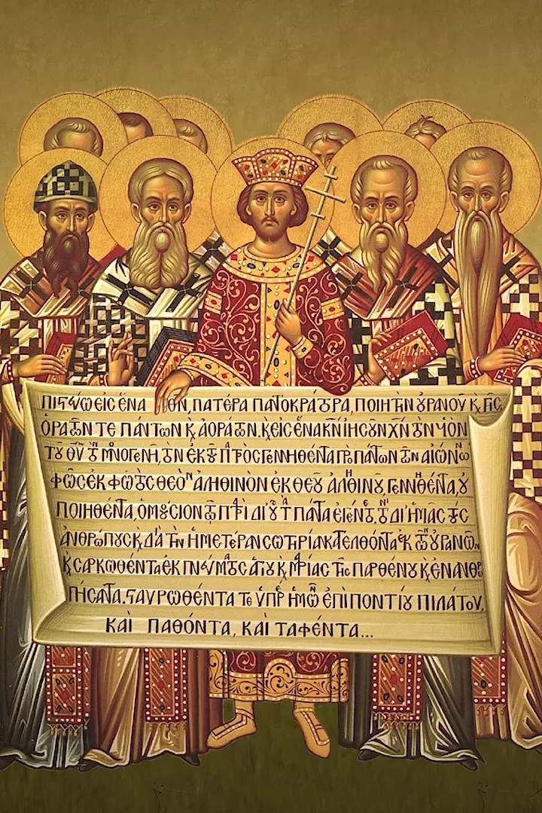

Nešpory
Bože, pospěš mi na pomoc.
Slyš naše volání.
Sláva Otci i Synu i Duchu Svatému,
jako byla na počátku, i nyní i vždycky a na věky věků. Amen. Aleluja.
HYMNUS
Poutníci naděje; H: Francesco Meneghello; T: Pierangelo Sequeri; česky: Josef Hrdlička
R. Plamen naděje v nás oživ,
v píseň chvály proměň jej.
Poutníky, co naději nesou,
Pane, chraň a provázej.
1. Každý jazyk, lid i národ
najde světlo v Slově tvém.
Všechno, co je rozptýlené,
jednotu nalezne v Něm.
R. Plamen naděje v nás oživ,
v píseň chvály proměň jej.
Poutníky, co naději nesou,
Pane, chraň a provázej.
2. Bože něžný, trpělivý,
posiluj nás v naději.
Nové nebe, novou zemi,
Boží Duch kéž obnoví.
R. Plamen naděje v nás oživ,
v píseň chvály proměň jej.
Poutníky, co naději nesou,
Pane, chraň a provázej.
3. Vstaň a jdi, Duch Svatý vane,
sám Bůh vstupuje v náš svět.
Kdo jej dá poznat hledajícím?
Pošli mne, zní má odpověď.
R. Plamen naděje v nás oživ,
v píseň chvály proměň jej.
Poutníky, co naději nesou,
Pane, chraň a provázej.
ŽALMY
1. ant. Všechny národy přijdou, Pane, budou se ti klanět, aleluja.
1Nakloň, Hospodine, svůj sluch a odpověz mi, *
vždyť jsem ubohý a chudý.
2Ochraňuj můj život, neboť jsem ti oddán. *
Zachraň svého služebníka, který v tebe doufá.
3Smiluj se nade mnou, Pane, *
neboť stále k tobě volám.
4Obvesel život svého služebníka, *
neboť k tobě, Pane, svůj život pozvedám.
5Tys totiž, Pane, dobrý a odpouštějící, *
nejvýš milosrdný ke všem, kdo volají k tobě.
6Naslouchej, Hospodine, mé modlitbě, *
všimni si hlasu mé snažné prosby.
7V den svého soužení k tobě volám, *
a ty mi odpovíš!
8Nikdo mezi bohy se ti nevyrovná, Pane, *
nic se nepodobá tvým skutkům.
9Všechny národy, které jsi učinil, přijdou, †
budou se ti klanět, Pane, *
a velebit tvé jméno.
10Protože tys veliký a činíš divy, *
ty jediný jsi Bůh.
11Nauč mě o své cestě, Hospodine, chci kráčet v tvé pravdě, *
veď mé srdce, abych ctil tvé jméno.
12Chci tě chválit, Pane, můj Bože, celým svým srdcem *
a věčně velebit tvé jméno.
13Neboť veliké je ke mně tvé milosrdenství. *
Z hlubin podsvětí jsi vytrhl můj život.
14Bože, povstali proti mně zpupní lidé †
a tlupa násilníků mi ukládá o život, *
neberou na tebe ohled.
15Ty však jsi, Pane, Bůh soucitný a milostivý, *
pomalý k hněvu, svrchovaně milosrdný a věrný.
16Pohleď na mě a smiluj se nade mnou, †
uděl sílu svému služebníku *
a zachraň syna své služebnice.
17Dej mi znamení své přízně, †
ať to vidí, kdo mě nenávidí, a zastydí se, *
že ty, Hospodine, jsi mi pomohl a potěšil mě.
Sláva Otci i Synu *
i Duchu Svatému,
jako byla na počátku, i nyní i vždycky *
a na věky věků. Amen.
Ant. Všechny národy přijdou, Pane, budou se ti klanět, aleluja.
Modlitba po žalmu
Otče, ty jsi pramen života,
skrze svého zemřelého a vzkříšeného Syna
jsi vytrhl náš život z hlubin podsvětí.
Prosíme tě, ať se tvůj Duch ujímá naší slabosti
a den ze dne nás obnovuje,
abychom o tvých milostech zpívali
na věky věků.
Amen.
2. ant. Vstupte před Hospodina s jásotem, aleluja.
1Jásejte Hospodinu, všechna země, †
2služte Hospodinu s radostí, *
vstupte před něho s jásotem!
3Vězte, že Hospodin je Bůh, †
on nás učinil, a my mu náležíme, *
jsme jeho lid a stádce jeho pastvy.
4Vstupte do jeho bran s díkem, †
na jeho nádvoří s chvalozpěvem, *
slavte ho, žehnejte jeho jménu!
5Neboť Hospodin je dobrý, †
jeho milosrdenství je věčné, *
po všechna pokolení trvá jeho věrnost.
Sláva Otci i Synu *
i Duchu Svatému,
jako byla na počátku, i nyní i vždycky *
a na věky věků. Amen.
Ant. Vstupte před Hospodina s jásotem, aleluja.
Modlitba po žalmu
Otče, stvořil jsi nás pro sebe
a my tě uznáváme za svého Pána.
Prosíme nasyť nás svou láskou a věrností,
a tvá církev, vyvolený lid, svatý národ proroků, králů a kněží,
ať ti slouží s radostí
a vzdává ti díky
skrze Ježíše Krista, našeho Pána,
který s tebou žije a kraluje
v jednotě Ducha Svatého
po všechny věky věků.
Amen.
3. ant. „Moje oči uviděly tvou spásu, kterou jsi připravil pro všechny národy.“
Srov. Kol 1,12-20
12Radostně děkujme Bohu Otci, *
že nás uschopnil k účasti na dědictví svatých ve světle.
13On nás totiž vytrhl z moci temnoty *
a uvedl do království svého milovaného Syna.
14V něm máme vykoupení *
a odpuštění hříchů.
15On je obraz neviditelného Boha, *
prvorozený všeho stvoření.
16V něm bylo všechno stvořeno: *
věci na nebi i na zemi, svět viditelný i neviditelný:
ať jsou to Trůny, ať jsou to Panstva, *
ať jsou to Knížata, ať jsou to Mocnosti.
Všechno je stvořeno skrze něho *
a pro něho.
17On předchází všechno *
a všechno trvá v něm.
18A On je hlava těla, *
to je církve.
On je počátek, prvorozený z mrtvých, *
ve všem zaujal prvenství.
19Veškerá plnost se sama rozhodla *
v něm přebývat,
20a skrze něho usmířit všechno se sebou †
jak na nebi, tak na zemi *
tím, že krví jeho kříže zjedná pokoj.
Sláva Otci i Synu *
i Duchu Svatému,
jako byla na počátku, i nyní i vždycky *
a na věky věků. Amen.
Ant. „Moje oči uviděly tvou spásu, kterou jsi připravil pro všechny národy.“
Modlitba po kantiku
Kriste, ty jsi obraz neviditelného Otce,
skrze tebe děkujeme Bohu
a oslavujeme tě za to,
že jsi nás usmířil s Bohem.
Ty jsi naše vzkříšení a život,
ty jsi Bůh, v jednotě Otce a Ducha, na věky věků.
Amen.
KRÁTKÉ ČTENÍ
Sk 20, 16-18.28-36
Pavel se nechtěl zastavit v Efesu, aby neztrácel v Asii čas. Chvátal, aby podle možnosti strávil svátek Svátek týdnů v Jeruzalémě.
Z Miléta Pavel poslal vzkaz do Efesu a povolal k sobě starší z církevní obce. Když k němu přišli, řekl jim: „Vy víte, jak jsem si u vás počínal od prvního dne, kdy jsem vstoupil do Asie, i po celý ostatní čas.
Dbejte na sebe i na celé stádo, ve kterém vás Duch Svatý ustanovil za představené, abyste spravovali Boží církev, kterou si získal vlastní krví. Já vím, že po mém odchodu k vám vniknou draví vlci, kteří nebudou šetři stádo. Z vašeho vlastního středu povstanou lidé, kteří se budou snažit převrácenými řečmi strhnout za sebou učedníky. Proto buďte bdělí a pamatujte na to, jak jsem já po tři léta ve dne v noci neustále se slzami každého zvlášť napomínal.
A nyní vás tedy svěřuji Bohu a slovu jeho milosti, které má moc vzdělávat a dát vám dědictví mezi všemi posvěcenými. Stříbro, zlato ani šaty jsem od nikoho nežádal. Víte sami, že tyhle moje ruce vydělávaly na všechno, co jsem potřeboval já i moji společníci. Ve všem jsem vám dal příklad, jak se takto vlastní prací máme ujímat potřebných a pamatovat tím na slova Pána Ježíše, protože on řekl: Blaženější je dávat než dostávat.“
A po těch slovech poklekl a s nimi se všemi se pomodlil.
ZPĚV PO KRÁTKÉM ČTENÍ
N: J. Gałuszka OP; T: Bodnár OP (Koi 90a)
Ó, Bože, světlo naše, je důstojné Tě chválit, Otce, Syna i Ducha Svatého.
Ó, Bože, světlo naše, celý vesmír se Ti klaní, Otci, Synu i Duchu Svatému.
KANTIKUM PANNY MARIE
Antifona ke kantiku Panny Marie: Ježíš se zeptal učedníků: „A za koho mě pokládáte vy?“ Petr odpověděl: „Za Božího Mesiáše!“
T: paraf. Magnificat; N: roráty, 16. století (K 813B)
1. Velebí má duše s jásotem, radostí
Pána věčné spásy, který dnes z výsosti
pohlédl k své dívce
pokorného srdce v lásce a milosti.
2. Již od této chvíle zástupy národů
v neustálé chvále po světa obvodu
slaviti mě budou,
dívku Páně chudou, v radostném závodu.
3. Veliké mi věci Hospodin učinil,
Pán můj nejvýš svatý ve mně si zalíbil.
Duši bohabojné
dary nebes hojné od věků připravil.
4. Ramenem své moci on pyšné rozptýlil,
sesadil i mocné, pokorné povýšil.
Sytí všechny lačné,
bohaté a pyšné s prázdnou pryč propustil.
5. V lásce své se ujal národa svatého,
pamětliv je slibu praotcům daného,
že z Judova rodu
přijde spása lidu od Boha věčného.
Ant. Ježíš se zeptal učedníků: „A za koho mě pokládáte vy?“ Petr odpověděl: „Za Božího Mesiáše!“
PROSBY
S vděčností se obraťme k našemu nebeskému Otci:
Kyrie, eleison.
― Děkujeme ti za svatého Efréma, který z vnuknutí Ducha Svatého zpíval o velikosti a kráse tvých tajemství.
― Děkujeme ti za svatého Atanáše, který neohroženě hlásal a hájil božství tvého Syna.
― Děkujeme ti za svatého Ambrože, který vyučoval pravé víře a ukazoval apoštolskou statečnost.
― Děkujeme ti za svatého Augustina, který v tobě nacházel zdroj pravé moudrosti a původce lásky.
― Prosíme tě naplň nás Svatým Duchem, abychom ti sloužili s opravdovou vnitřní radostí.
― Prosíme tě pomáhej nám, abychom tě hlouběji poznávali a opravdověji milovali.
― Prosíme tě veď nás, abychom ochotně plnili tvou vůli a schopně a moudře doprovázeli druhé.
― Prosíme tě uč nás, abychom správně chápali a věrohodně vyznávali pravdy víry.
MODLITBA PÁNĚ
Otče náš, jenž jsi na nebesích,
posvěť se jméno tvé.
Přijď království tvé.
Buď vůle tvá jako v nebi, tak i na zemi.
Chléb náš vezdejší dej nám dnes.
A odpusť nám naše viny,
jako i my odpouštíme našim viníkům.
A neuveď nás v pokušení,
ale zbav nás od zlého.
Neboť tvé je království i moc i sláva navěky.
MODLITBA
Všemohoucí Bože, tvé vtělené Slovo nás prozářilo novým světlem; dej, prosíme, ať víra, která svítí v našich srdcích, září i z našich skutků. Skrze tvého Syna Ježíše Krista, našeho Pána, neboť on s tebou v jednotě Ducha Svatého žije a kraluje po všechny věky věků.
LITANIE K OCHRÁNCŮM NICEJSKÉ VÍRY
Za zpěvu litanií následuje průvod ke křtitelnici.
Pane, smiluj se.
Pane, smiluj se.
Kriste, smiluj se.
Kriste, smiluj se.
Pane, smiluj se.
Pane, smiluj se.
Svatá Maria, Matko Boží,
oroduj za nás.
Svatá Heleno,
Svatý Alexandře,
Svatý Osie,
Svatý Eustachie,
Svatý Spyride,
Svatý Pafnucie,
Svatý Mikuláši,
Svatý Makarie,
Svatý Achile,
Svatý Leoncie,
Svatý Nikasie,
Svatý Atanáši,
Svatý Hilarie,
Svatý Efréme,
Svatý Basile,
Svatý Řehoři,
Svatý Ambroži,
Svatý Augustine
Kriste, uslyš nás.
Kriste, uslyš nás.
Kriste, vyslyš nás.
Kriste, vyslyš nás.
VYZNÁNÍ NICEJSKÉ VÍRY
podle troparu a kondaku ze svátku Svatých Otců prvního ekumenického koncilu
Jak jsi nejslavnější, Kriste, náš Bože!
Svaté Otce jsi ustanovil jako světla na zemi!
Skrze ně nás vedeš k pravé víře!
Přeslitovný! Sláva Tobě!
Kázáním apoštolů a učením Otců
jsi ustanovil jedinou víru.
Ona je ozdobena rouchem pravdy,
utkána nebeskou teologií.
Ona vyhlašuje, ona oslavuje
velké tajemství pravoslaví:
Věříme v jednoho Boha, Otce vševládného,
Stvořitele všeho viditelného i neviditelného;
a v jednoho Pána Ježíše Krista, Syna Božího,
je zplozen jako jednorozený z Otce, to je z Otcovy podstaty;
Bůh z Boha; Světlo ze světla;
pravý Bůh z pravého Boha;
zplozený, nikoli stvořený;
soupodstatný s Otcem;
skrze něho je stvořeno všechno, co je v nebi i co je na zemi.
On pro nás lidi a pro naši spásu sestoupil z nebe,
vtělil se a stal se člověkem,
trpěl a třetího dne vstal z mrtvých,
vstoupil na nebesa a přijde soudit živé i mrtvé.
Věříme v Ducha svatého.
PŘIPOMÍNKA KŘESTNÍHO PONOŘENÍ
Radujte se, pokřtění,
královskou důstojností odění,
ve smrti pohřbení,
vírou Krista znovuzrození.
Ponořením, politím nebo pokropením vodou si přítomní přimenou svůj křest.
Všemohoucí Bůh, Otec našeho Pána Ježíše Krista,
nás vysvobodil z hříchu
a dal nám život z vody a z Ducha Svatého.
Kéž v nás svou milost chrání,
abychom byli s Kristem spojeni na věky věků.
POŽEHNÁNÍ
Pokoj Boží, převyšující všechno chápání,
ať střeží vaše srdce i vaše myšlenky,
abyste nepřestávali poznávat a milovat Boha
i jeho Syna, našeho Pána Ježíše Krista.
Amen.
Požehnej vás všemohoucí Bůh,
Otec i Syn i Duch Svatý.
Amen.
SALVE REGINA
Zdrávas, Královno; T: asi Heřman z Reichenau, 11. století; N: chorál (MZ 1001)
Salve, Regina, * mater misericordiæ,
vita dulcedo et spes nostra, salve.
Ad te clamamus, exules, filii Hevæ.
Ad te suspiramus, gementes et flentes in hac lacrimarum valle.
Eia ergo, advocata nostra, illos tuos misericordes óculos ad nos converte.
Et Iesum, benedictum fructum ventris tui, nobis post hoc exilium ostende.
O clemens, o pia, o dulcis Virgo Maria.